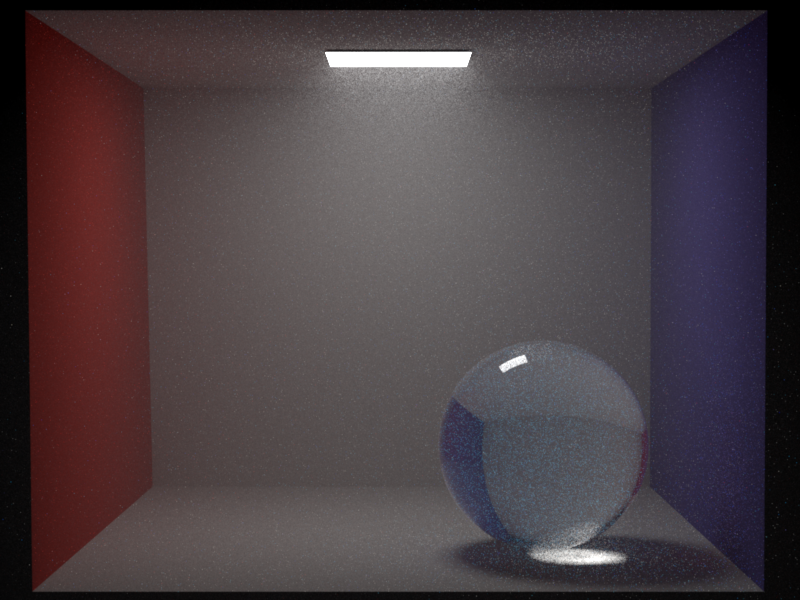
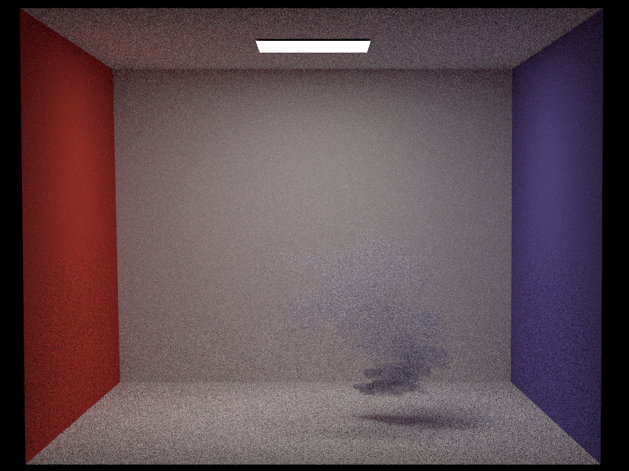

# Introduction
My project's core feature is implementing participating media. I have implemented Homogeneous media, that are children of shapes and that take as parameters the albedo and extinction coefficient. I also modified the shape implementation to accomodate media (interior and exterior).
I have implemented two different integrators : A MATS Volumetric path tracer. This one is simple short and elegant, however produces very noisy images. And secondly, I have implemented a MIXED Volumetric path tracer. This integrator combines MATS integration and MIS integration by performing MIS outside media, and MATS inside media. This integrator provides a good balance between straightforward implementation and noise-reduced renders.
Finally, I implemented Heterogeneous media. It contains the creation of Volumes and Grid Volumes that are responsible for reading the extinction coefficient data of a medium from a `.vol` binary file and maps it to a float data structure in memory. A grid volume returns the extinction coefficient associated with a point in the volume. My Heterogeneous Media performs distance sampling using Delta Tracking.
Please note that for both Homogeneous and Heterogeneous media, I the extinction coefficients are not spectrally variant and are assumed to be of type `float`.
In this report you can find the detailed description to my various implementations along with the validation and discussion concerning my results.
# Homogeneous Participating Media
Implementing Homogeneous Participating media was perhaps the most important part of my project, as it consists of most of the classes.
As I was unable to properly debug this part before the implementation onf the Volumetric path tracer, I had to take extra care while writing these classes to not have too many bugs.
## Medium.h and Medium.cpp
**MediumQueryRecord Stuct:**
Media will need to be sampled. Specifically, we will need to perform free path sampling to sample a distance within this medium, and return the value (radiance) of the medium at this place. This is why I have decided to create a MediumQueryRecord struct just like all other nori objects that need sampling. This query record will contain:
- **Ray3f ray:** The ray in the medium along which we sample the distance. assum ray originates within the mediun, or at the edge of the medium (this is the logic followed in the path tracer)
- **float traveledDist:** distance that is to be or has been sampled.
- **bool scattered:** true if the interaction happens, false if the ray passes through the medium
- Two constructors : one for querying, and one for sampling
**Medium.h and Medium.cpp:**
A Medium is conceptually quite similar to the Shape class, although almost more simple. Just as the Shape class has a BSDF, the Medium class has as attribute a pointer to a phase function, along with a method to return this attribute.
It has some other similar methods to the Shape class such as :
- A destructor to libarate memory: in medium.cpp, this fuction liberates the memory allocated to the phase function
- `getClassType`: Return EMedium for the parser
- `addChild`: add a phase function given in the xml as a child of the medium
- `Activate`: if no phase function was given during construction, add isotropic phase function
- `getPhaseFunction` : return pointer to attributed phase function
- **Attributes:** Pointer to phase function, name
The name will be a string wither "interior" or "exterior". Similarly to Mitsuba, a media will be associated to shapes and can be defined as either the exterior or the interior medium of the shape.
There are two concepts that all media types will need for implementation. This will be free path sampling and evaluation of Transmittance.
- `sampleDist`: The free path sampling is essential for implementing volumetric path tracing. Given a ray (within medium), this method will sample a distance to the next interaction in the volume based on the medium's properties. It takes the a sampler and MediumQueryRecord as inputs, fills mRec.traveledDist, and outputs the weighted radiance value of the medium at the sampled distance `sigma_s * Transmittance(t) / pdf(t)`
- `evalTransmittance`: The transmittance $T_r(t) = \frac{L_t}{L_0}$, where $L_t$ is the radiance at traveled distance t, and $L_0$ is the radiance at the beginning for the ray (if no radiance was lost along ray, this would be the radiance at our intersection point). In other words, Transmittance is the probability that a photon will make it beyond distance t. Therefore, this value is important for free path sampling.
Later, I will likely modify this class to add methods and attributes in the case of an emissive medium.
## PhaseFunction.h
Conceptually, a phase function is to a medium what a BSDF is to a surface. Therefore, the BSDF class and PhaseFunction class have essentially the same structure. They both provide sampling and querying. I largely inspired myself of the BSDF class for the following structure :
**PhaseFunctionQueryRecord Stuct:**
- Contains incident direction $w_i$ and outgoing direction $w_o$ (for now in world coordinates does not pose an issue)
- Point p at which we are sampling/querying (tbd. if this is necessary - for now it is not!)
- One constructor for querying and one for sampling
**PhaseFunction Abstract Class:**
- `sample` method : sampling the phase function and returning its importance weight. Inputs are a phase function query record and a sample point.
- `eval` method : evaluating a phase function with given incident and outgoing directions. Input phase function query record.
- `pdf` method : evaluating pdf of phase function with given incident and outgoing directions
- `getClassType` : return class `EPhaseFunction` type of given instance
## Isotropic.cpp
Isotropic phase functions are analogous to diffuse BSDFs: we uniformly sample the outgoing direction. However, on the contrary to diffuse BSDFs that uniformly sampled over a hemisphere, we now want to uniformly sample over a sphere. Other than that, there are no parameters to isotropic phase functions. Therefore, the implementation is quite straightforward:
- `pdf` : uniform sampling gives a pdf of $\frac{1}{A}$ for each point. Seeing as $A = 4\pi$ for a sphere, we return $\frac{1}{4\pi}$ for all queries
- `eval`: from the PBRT book, Chapter 11.2, the isotropic phase function always returns $\frac{1}{4\pi}$
- `sample` : sample outgoing direction $\w_o$ from the uniform sphere, and output the evaluated phase function divided by the pdf (which always returns 1 in this case)
- `toString` : simple toString method
## Homogeneous.cpp
As explored in class, the volumetric rendering equation goes as follows :
$$
L(\textbf{x}, \vec{w}) = T_r(\textbf{x}, \textbf{x}_z)L(\textbf{x}_z, \vec{w})
+ \int_0^z T_r(\textbf{x}, \textbf{x}_t)\sigma_a(\textbf{x}_t)L_e(\textbf{x}_t, \vec{w}) dt
\\+ \int_0^z T_r(\textbf{x}, \textbf{x}_t)\sigma_s(\textbf{x}_t) \int_{S^2} f_p(\textbf{x}_t, \vec{w}', \vec{w})L_i(\textbf{x}_t, \vec{w}') d\vec{w}' dt
$$
With each term meaning :
- $T_r(\textbf{x}, \textbf{x}_z)L(\textbf{x}_z, \vec{w})$ : Background surface radiance multiplied by the transmittance term
- $\int_0^z T_r(\textbf{x}, \textbf{x}_t)\sigma_a(\textbf{x}_t)L_e(\textbf{x}_t, \vec{w}) dt$ : Accumulated emitted radiance from the participating medium
- $\int_0^z T_r(\textbf{x}, \textbf{x}_t)\sigma_s(\textbf{x}_t) \int_{S^2} f_p(\textbf{x}_t, \vec{w}', \vec{w})L_i(\textbf{x}_t, \vec{w}') d\vec{w}' dt$ : Accumulated in scattered radiance
In this class, we assume the medium does not emmit any radiance.
For Homogeneous media, we know a couple things that make the implementation easier: the absorbtion and scattering coeffitients $\sigma_a$ and $\sigma_s$ are constant. Therefore, so is the extinction coefficient $\sigma_t = \sigma_a + \sigma_s$. This, therefore gives us the following value for the transmittance :
$$
T_r(t) = e^{-\sigma_t t}
$$
Moreover, want the pdf to be proportional to the transmittance for importance sampling. Therefore, we have :
$$
pdf(t) = \sigma_t e^{-\sigma_t t} \\
CDF(t) = 1 - e^{-\sigma_t t} \\
CDF^{-1}(\xi) = - \frac{\ln{1 - \xi}}{\sigma_t}
$$
Where $t$ here is the distance along the ray at which we sample. Therefore, now that we have looked at the theory, I may explain my implementation for this class :
**Attributes** :
- `Color3f m_sigma_s` : Scattering coefficient. It is a Color3f as this is what will allow us to get colored media and not just greyscale media
- `Color3f m_sigma_a` : Absorbtion coefficient. Defines the absorption properties of the media. Similar to scattering for choosing the type `Color3f`
- `Color3f m_extinctionCoeff` : $\sigma_t = \sigma_a + \sigma_s$. Stored as a `Color3f`, but each component has the same value (not spectrally varying).
- `Color3f m_albedo` : $albedo = \frac{\sigma_s}{\sigma_t}$
**Methods** :
- Constructor : get $\sigma_t$ (float) and $albedo$ (color) from property list. If the inputs do not satisfy the requirements for albedo and $\sigma_t$, through an exception. Store `m_sigma_s` as $albedo * \sigma_t$. Store `m_sigma_a` as $\sigma_t - \sigma_s$. Store the medium name.
- `toString` : output a human readable string showing all medium properties
- `evaluateTransmittance` : input is a sampled mRec. Simply calculate $T_r(t) = e^{-\sigma_t t}$. Output is Color3f, but as $\sigma_t$ is not spectrally varying it is a greyscale color.
- `sampleDistance` : receive as input an mRec (assume ray is filled, but not traveledDist) and a sampler. We want to return the weighted medium value. As seen in class, this is $$mediumRadiance = \sigma_s \frac{Tr(t)}{pdf(t)} = \frac{\sigma_s}{\sigma_t}$$ Because we have $pdf(t) = \sigma_t e^{-\sigma_t t}$ and $T_r(t) = e^{-\sigma_t t}$. Moreover, similarly as in the dielectric BSDF, we want the ray to pass through the medium occasionally, without interacting with it. All these thing considered leads me to the following implementation of my free path sampling method :
- get random point from sampler
- Calculate traveledDist with formula mentioned in theory part
- set traveledDistance to ray.maxt if it is bigger than ray.maxt and return `Color3f(0.0f)`. Set scaterred to false.
- otherwise return $albedo = \frac{\sigma_s}{\sigma_t}$. set the scattered bool of mRec to true.
If the scattered value of mRec i set to false, the path tracing integrator will not consider volumetric interaction.
## Other Modifications
In order to correctly add medium to meshes I needed to modify certain other classes. Initially, I wanted to be able to assign a general medium to the scene, but after checking the way media are implemented in other rendreres, such and cycles and mitsuba, I decided that it was better to assign media to meshes always.
Therefore, I changed the following classes:
**the Shape.h and Shape.cpp**
1. Adding media : I added attributes m_medium_int and m_medium_ext which are a pointers to the exterior and interior media. I handle them in the activate and addChild methods of Shape.cpp, as well as in the destructor, and in the toString Method. I also added a `getMediumExterior`, `hasMediumExterior`, `getMediumInterior` and `hasMediumInterior` methods similarly to Emitter and BSDF attributes.
2. Handling null BSDF : I needed to make it possible to assign no BSDF to a shape, I therefore changed around the above mentioned methods to accommodate a possibly null BSDF. This also made me add a `hasBSDF` method.
3. Intersection : Added `isMediumTransition` and `getTargetMedium` that are responsible for determining the next medium after a surface intersection with respech to the mesh shap and the surface normal. (inspired by Mitsuba)
4. Note that I made it so that emitters have a default diffuse BSDF, not null.
I also made some changes in `parser.cpp` and `object.h` to accomodate these new classes.
## Scene set up
For homogeneous media, you can assign a medium to a shape with the following xml set up :
The BSDF is now optional and can be removed for a medium-only mesh.
# Volumetric MATS Path Tracer
**IMPORTANT ASSUMPTION:** In my project, we assume media have to be associated to a shape. If they have an exterior medium, it will appear the same as if you associate exterior medium to a shape in mitsuba: seems similar to a diffuse bsdf. If you wish to envelop your scene in a medium, add it as interior medium of a mesh that envelops your scene.
## Implementation
For the volumetric MATS path tracer, I followed the logic given in class, along with some extra conceptualisation and combining with the ideas in `path_mats`. I came up with the following implementation :
- Initialise the variables : `Li`, throughput `t`, shadow ray `shadowRay` that keeps track of the current segment in the path, and `currentMedium`, `isCurrentMedium` a pointer to a medium and boolean. This pointer is null if we are not in a medium and points to the medium if we are. Before starting the PT loop, check if the first ray shot by the camera is in a medium.
- While true :
- Check for the next mesh intersection
- Create a medium query record, if we are currently in a medium then sample a distance in this medium
- If we are currently in a medium, and that the sampled distance is smaller than the distance to the next mesh intersection, ie. mRec.scattered is true :
**Volumetric Interaction Case**
- Sample phase function
- Perform Russian Roulette for termination
- Update throughtput `t *= WeightedPhaseFct` and shadow ray to the newly sampled direction and point at which we sampled as the new origin of the path. No medium change
- Else : **Surface Interaction Case**
- If there is no surface intersection : break
- If no BSDF : (we are simply entering a new medium, if there is one of course)
- Shoot new ray in the same direction with origin being the point where we are entering the new medium. Update current Medium pointer (also handles case where there is no medium, although having a mesh with no bsdf, medium, or emitter makes no sense!)
- Otherwise : Same as `path_mats`.
- If emitter : evaluate and accumulate the evaluated radiance multiplied by throughput to overall radiance
- Perform Russian Roulette
- Sample BSDF and update Parameters for next bounce
- Return accumulated Radiance
## Results and Validation
For Validation, I will compare scenes between Nori and Mitsuba.
**Scene 1 : Cornel Box Simple**
This simple scene represents a cornell box with two simple spheres filled with medium. The left sphere is also envelopped by a dielectric BSDF, whereas the right sphere has a null BSDF. The xml for this scene can be found in `scenes/project/homogeneous/cbox_homogeneous_mats.xml`
The Mitsuba scene uses MIS, but only 256 sample. The Nori scene is rendered with the above MATS integrator and with 512 samples
**Scene 2 : Cornel Box Envelopped**
For this scene I shifted the sphere with no bsdf to the center and set the radius to 2 in order for it to envelop most of scene. The other parameters stay the same, except for the extinction coefficien that I reduced so that light can travel better through the medium. This scene can be found in `scenes/project/homogeneous/cbox_envelopped_mats.xml.

You can tell that the result for Nori is slightly lighter than the result for Mitsuba. This could be due to difference in parameter value conventions. It could also possibly be an illusion due to the amount of noise in my MATS integrator compared to mistsub who samples with MIS.
## Comments and Difficuties
- I am quite happy with my results! The biggest issue I had was dealing with medium transitions at intersections. I finally was able to find an implementation that worked the moment I inspired myself from mitsuba. The only downside of this conception, is that the exterior media to shapes are strange, you would think exterior media would fill the scene with media, but that would entail boundless media and would cause problems if two meshes next to each other both have exterior media. These were all questions that were quite difficult to answer, and once I accepted the fact that I had to make assumptions on how the scene was built for the path tracer to work, I was able to come up with and elegant solution
- When you assign media to the exterior of a mesh, it appears as a diffuse texture around the mesh which is exactly the same as Mitsuba. In general, the implementation should be used by assigning media's as interior, but the fact that my implementation accomodates adding pointers to exterior media facilitates trasition handling specifically in the case of nested medias.
- As we see, this result produces very noisy solutions, which might cause problems in the denoiser upon rendering my final image.
# Volumetric Mixed Path Tracer : Mats inside medium, MIS outside medium
Thanks to the indication of an assistant, I have been able to construct another path tracer `volpat_mixed` that does MATS sampling inside a medium, and MIS sampling outside media. This give a much improved result. In the case of surface interaction, we can do MIS sampling.
For the implementation of this path tracer :
- Initialise same as `volpath_mats`
- while true :
- sample distance in potential medium to determine if we are going to do medium or surface interaction
- if medium interaction : same code as `volpath_mats`
- if surface interaction :
- if no BSDF : same as `volpath_mats` with the addition of updating the `bRecMATS` for the next iteration
- else : same as `path_mis` with the addition of checking medium transition and updating the medium pointer
## Validation
**Scene 1** (Simply change the integrator tag from scene 1 scenes to "volpath_mixed")
**Scene 2** Adding some icy meshes
We see here for more complex meshes, the result is not exactly the same, particularly on the icecles, near the ceiling, the shadows and oclussions seem more precise. My guess is that this comes from MIS sampling inside the medium as well.
This code took me about four days to debug! again the difficulties lied with handling transitions in media, I also made tests with media inside media that showed apparent bugs that needed fixing, etc. I am really happy with the result.
# Heterogeneous Participating Media
## Conceptualization and Reference creation
Heterogeneous participating media is a complex feature to implement. This is why I began by fully understanding the Mitsuba implementation, specifically what are the extinction coefficients and how do we deal with them? How can we model them?
I found that Mitsuba has the implementation of `Heterogeneous.cpp`, but additionally, models Volumes in separate classes `Volume.h` and `GridVolume.cpp`, that handle the preprocessing of the volumes. Heterogeneous media stores a reference to a volume class as an attibute which allows it to retrieve information on the caracteristics of the volume in attributed spaces.
My goal will be to implement a simplified version of these classes : I will implement the abstract class Volume.h and the GridVolume class that will model grid volumes, capable of returning the extinction coefficient of the media at a given position, and also capable of finding the maximum extinction coefficitent in the medium for delta tracking.
Grid volumes handle these coefficients through an external `.vol` file passed to the program by the user in the xml file. Therefore, my first step was understanding how mitsuba uses these files, and how I can model a volume, extract its information, and pass it to mitsuba for rendering.
I began by modelling a simple smoke simulation in blender, I then noticed that per frame, the information on the volume is stored in a `.vdb` file in the cache. I retrieved the file of a specific frame that looked good and converted it to a `.vol` file by using the mitsuba2-vdb-converter. What is great about this tool, is that in `.vdb` files there are multiple grids stored about the volume (density, temperature, shadow, etc.) and the converter allows you to exctract one of these grids and store it as a `.vol` file, which is exactly what I need for the densities.
We have the following information on our density grid : `density float (25,25,6)->(70,70,94) 46x46x89 78.2KVox 338KB (In Core) 893KB (Total)`
For reference I found this smoke bunny on the open vdb website, which will be my first reference for this part:
The code I will seek to implement for this part is the following:
In green are the already implemented classes, yellow are the classes to implement
## Volume.h
This class represents abstract volumes. Mitsuba has multiple implementations and types of volumes. However, in my project I will stick to the most simple grid volume case, where each extinction coefficients is stored in one cell of the grid. `Volume.h` is a simple abstract class. It has the following virtual methods :
- Destructor (does nothing)
- `getMaximumDensity()` returns the majorant of the extinction coefficients
- `getBoundingBox` returns the bounding box of the volume
- `lookupDensity(p)` given a point in the world, return the density at that point
- `getClassType` returns type `EVolume` that I added to `object.h`
- **Attribute**: `m_bbox` containing the bounding box of the volume
## GridVolume.cpp
**IMPORTANT** This class uses `sys/mman.h`and therefore is only buildable on Unix systems.
This class is a lot more elaborate as it is responsible for reading and decoding the `.vol` binary file, mapping and unmapping the data from the file and so forth. The attributes are the following:
- `float m_maxDensity` : the majorant of the densities
- `float* m_extinctionCoeffs` : pointer to the grid containing the densities
- `Transform m_transformVoltoWorld` : transformation applied from the volume to the world
- `std::string m_filename` : name of the file containing the densities
- `int m_fileSize` : number of bytes in the corresponding file (incl. header)
- `Vector3i m_resolution` : that holds the size of the gird
- `int m_channels`: number of channels in the grid, i.e. 1 if the densities are floats (grayscale) or 3 if they are spectrally variant. My implementation only supports channels of 1.
- `static int const m_headerSize = 12` : nbr of bytes in the header of the `.vol` file
This class contains the methods:
- One constructor that initializes the transform, and then calls the loadVolFile method to initialize the other attributes. Finally it calls `setMaxDensity` to set `m_maxDensity`
- One Destructor that unmaps the extinction coefficients using `munmap`
- `getMaximumDensity` that returns `m_maxDensity` and `getClassType` that returns `EVolume`
- `toString()` method returning a human readable string containing some defining characteristics of the grid volume
- private `setMaxDensity` method called once at construction, that iterates through all the densities and stores the max density in the `m_maxDensity` attribute
- `lookupDensity` and private `loadVolFile` methods who's implementations are described below:
**loadVolFile method**
This method takes a `.vol` file, reads its header and maps the extinction coefficients to the m_extinctionCoeff pointer. I used `ifstream` to read the header, and `mmap` to then map the data. The structur od a `.vol` file is the following:
* Bytes 1-3 : ASCII Bytes '\code{V}', '\code{O}', and '\code{L}'
* Byte 4 : File format version number (currently 3)
* Bytes 5-8 : Encoding identifier (32-bit integer).
* Bytes 9-12 : Resolution X
* Bytes 13-16 : Resolution Y
* Bytes 17-20 : Resolution Z
* Bytes 21-24 : Number of channels (32 bit integer, supported values: must be 1 for densities)
* Bytes 25-48 : Axis-aligned bounding box of the data stored in single precision (order: xmin, ymin, zmin, xmax, ymax, zmax)
* Bytes 49-* : Binary data of the volume stored in the specified encoding.
Therefore, in this method I use `ifstream` to read each element of the header, verify that the encodings fit with what will be supported in my implementation (otherwise throw exeption), and store the info in their respective attribute. I then close the `ifstream`, and reopen the file using `mmap`, and map the data to our `m_extinctionCoeffs` pointer. Finally, I increment the pointer by the headerSize so that it is pointing to the beginning of that data and not the beginning of the header.
**lookupDensity method**
For this method, I followed the Mitsuba example and use 3D interpolation to get smooth density values accross the volume. Given a point `p` in the worls, this method does the following:
- Transform the point into the grid space by applying the inverse transform of the volume, and then casting it into the grid resolution space using `cwiseProduct`
- Create a floored / int version of the point
- Calculate the index `offset` in the grid of the given point
- Extract 8 densities surrounding the point in the grid (wiht density at `p0` being the one closest to the origin of all 8 values)
- Calculate the respective distances from our point to our grid point in `w0`.
- Calculate interpolated 3D density `extinctionCoeff` using 3D interpolation
## Heterogeneous.cpp
Thanks to the `Volume` and `GridVolume` classes, the Heterogeneous class is quite elegant. It contains 4 attributes :
- `m_densities` which is a pointer to a Volume instance
- `m_scaleDensity` a scale factor for the densities in the case that the .vol file has a different scale
- `m_albedo` which is the constant color of our medium
- `m_name` containing whether we are in an interior or exterior medium
The methods in this classe are the following :
- One constructor : taking the scale factor albedo, and name from the prop list
- One destructor : calls the Volume destructor for the densities
- addChild overrid : adds a Volume as child
- activate: throws exception if no volume has been initialised
- `toString` method
- `sampleDistance` and `evaluateTransmittance` who's implementations are described below
**sampleDistance**
This method's goal is to perform Delta Tracking to sample a distance through a heterogenious medium, record the distance in the `mRec` query record, and return the weighted value of the medium at that point.
Concerning the return value, we have that the weighted medium value is
$$
madiumVal = \sigma_s(t) \frac{Tr(t)}{pdf(t)}
$$
with $Tr(t) = e^{\int_0^t - \sigma_t(s) ds}$ and $pdf(t) = \sigma_t(t) e^{\int_0^t - \sigma_t(s) ds}$. Therefore, $mediumVal = \frac{\sigma_s(t)}{\sigma_t(t)} = albedo$. Now that we have covered the theory, the implementation goes as follows:
- Check that the ray intersects with the volume bounds and set mint, maxt of the ray accordingly. Also extract the majorant $\overline{\sigma_t}$ from the densities (scaled). Set the smapled distance $t$ to $mint$
- do .. while (pTermination $\leq$ sample) and t $\leq$ maxt :
- accumulate to $t = t - \frac{\ln{1 - rand()}}{\overline{\sigma_t}}$
- calculate the point p at distance t and look up density $\sigma_t$ there, scale the density by the scale
- calculate termination probability $pdf(t) = \frac{\sigma_t}{\overline{\sigma_t}}$
- if the loop terminated becaust $t$ supassed $maxt$, then our ray did not scatter, return Color3f(0.0f)
- else, the ray scatters and we must return the weighted medium value i.e. the albedo.
**evaluateTransmittance**
We have that for Heterogeneous Media, the transmittance $Tr(t)$ (i.e. the probability that our ray makes it beyind distance $t$) Is defined as
$$
Tr(t) = e^{\int_0^t - \sigma_t(s) ds}
$$
We therefore have to estimate this integral. I use the Delta Tracking for transmittance algorithm explained in lecture 16 on participating media. It is noisy, but at least it is unbiased. The algorithm goes as follows :
- Check for the intersections with the bounding box of the volume, set the majorant, transmittance, distance t to mint,
- For a deterministic number of samples do the following loop :
- While true :
- sample an accumulation to t : $t = t - \frac{\ln{1 - rand()}}{\overline{\sigma_t}}$
- if surpasses maxt add 1 to the transmittance.
- terminate loop if $pdf(t) = \frac{\sigma_t}{\overline{\sigma_t}} \leq rand()$
-> transmittance is 1 if t never scatters, and 0 if it does. We do this for an nSamples np of time then return $\frac{transmittance}{nSamples}$ to get the ratio of the nbr of times the ray scattered. This defines our transmittance.
I actually do not use this method in the path tracer as the transmittance cancels itself out with the pdf, but it was interesting to implement to understand how it works!
### Results and Validation
This is how you can set up a heterogeneous media in a scene :
The following scenes are in `scenes/heterogeneous/`
***Greyscale Medium***
The corresponding scene can be found in `/scenes/heterogeneous/cbox_heterogeneous.xml`. The bunnies are not in the exact same position in Mitsuba vs. Nori as I had a hard time making the transformation from volume to world equivalent in both cases (it seems the axis are scaled and directed differently).
Unfortunately this difference in alignments also influences the shoadows.
***Chromatic Medium***

Aside from aligning the mitsuba scenes to the Nori scenes correctly, I had no other major issue with this feature. I am happy with the results. If I could improve one thing, it would be to better my Volumetric Path Tracer to do MIS in media as well so as to get better performance and less noise.
This aligning problem was also because aligning the mesh domain is one thing, but aligning the volume instance is another. Therefore they had to be well aligned with each other for the media to even be apparent.